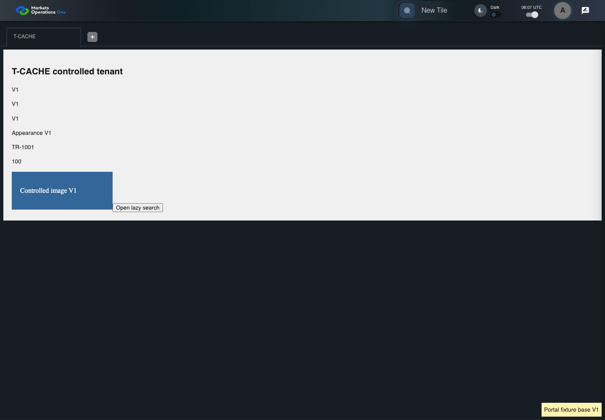

KNOW-050 real HTTP cache and controlled tenant lifecycle
PASS · application/run-050/know-050-real-http-cache-and-controlled-tenant-lifecycle-893509703097-attempt-1 · ACTUAL_APPLICATION_LOCAL_SERVICES
Actual current React shell and real Chromium HTTP cache. Local HTTP fixture server supplies synthetic Alice, permissions, base entry wrapper, container, tile, trade, lazy content, CSS and images. V1/V2 markers identify controlled fixture assets. No browser routing, production CDN, real business tenant, or changed base binary acceptance.
2026-10-22T06:07:15.548Z to 2026-10-22T06:07:20.793Z
Assertions and result · Artifact manifest · Exact run inputs and source hashes
Result SHA-256:c6f3f92661731ae9bab9195f85904a649aaab7be3aca4ad752fce38049de0322Machine observations
- cache-fixture-scope.json
d620ae5b380d0982909f49db517c067249fc7e39c089f58282f55ffd81dcd257 - catalog-permission.json
4576b9f9c9361447b18db5aae1e178c8a3d131ec4abab75a56b449a2237e958e - http-cache-observations.json
4c8700c551009d6e3ab6100574ed6fd77173edb927726b46f2374ec8f712f85e
Screenshot capture: CAPTURED. Named frames: 11.
Step screenshot bindings: COMPLETE. 10/10 canonical steps have execution screenshots.
Bindings measure structural coverage only. They do not establish screenshot content quality or relevance.
Screenshot content review: NOT_REVIEWED. Recorded context: 0/11 frames. Identical image bytes: 6 repeated frames. Recorded context does not establish human visual review.
Canonical step timeline
Given Alice uses an isolated browser profile with the synthetic identity and permissions defined for this case
Execution: PASSED.
1. step-01 Visible state after step 1: Given Alice uses an isolated browser profile with the synthetic identity and permissions defined for this case
2026-10-22T06:07:18.048Z · 1440×1000
Step: /Users/lushevol/code/github/ratan-release-impact/workbench/tasks/ui-test-coverage-20261022/test-cases.md:12215
SHA-256:e073a145e20d9367b1e52935b861d3caa20dc309ef8375a6848ae59cfbff4262And Alice has catalog permission for the synthetic tile with exact title "T-CACHE"
Execution: PASSED.
2. step-02 Visible state after step 2: And Alice has catalog permission for the synthetic tile with exact title "T-CACHE"
2026-10-22T06:07:18.160Z · 1440×1000
Step: /Users/lushevol/code/github/ratan-release-impact/workbench/tasks/ui-test-coverage-20261022/test-cases.md:12216
SHA-256:e073a145e20d9367b1e52935b861d3caa20dc309ef8375a6848ae59cfbff4262Image bytes match frame 1. An unchanged image can be valid for consecutive assertions. This match does not establish correct step content.
And The browser cache holds V1 tile assets
Execution: PASSED.
3. step-03 Visible state after step 3: And The browser cache holds V1 tile assets
2026-10-22T06:07:18.639Z · 1440×1000
Step: /Users/lushevol/code/github/ratan-release-impact/workbench/tasks/ui-test-coverage-20261022/test-cases.md:12217
SHA-256:cd98d1761e4a8150d28e68c273f9872e6205ef34c268c6854afc8591836a2d00And The V2 entry references a new CSS asset and its agreed appearance marker
Execution: PASSED.
4. step-04 Visible state after step 4: And The V2 entry references a new CSS asset and its agreed appearance marker
2026-10-22T06:07:18.748Z · 1440×1000
Step: /Users/lushevol/code/github/ratan-release-impact/workbench/tasks/ui-test-coverage-20261022/test-cases.md:12218
SHA-256:cd98d1761e4a8150d28e68c273f9872e6205ef34c268c6854afc8591836a2d00Image bytes match frame 3. An unchanged image can be valid for consecutive assertions. This match does not establish correct step content.
When Alice reloads the browser page containing the portal
Execution: PASSED.
5. step-05 Visible state after step 5: When Alice reloads the browser page containing the portal
2026-10-22T06:07:19.098Z · 1440×1000
Step: /Users/lushevol/code/github/ratan-release-impact/workbench/tasks/ui-test-coverage-20261022/test-cases.md:12219
SHA-256:e073a145e20d9367b1e52935b861d3caa20dc309ef8375a6848ae59cfbff4262Image bytes match frame 2. An unchanged image can be valid for consecutive assertions. This match does not establish correct step content.
And Alice clicks the text "New Tile" on the portal workspace page
Execution: PASSED.
6. step-06 Visible state after step 6: And Alice clicks the text "New Tile" on the portal workspace page
2026-10-22T06:07:19.305Z · 1440×1000
Step: /Users/lushevol/code/github/ratan-release-impact/workbench/tasks/ui-test-coverage-20261022/test-cases.md:12220
SHA-256:c068600c5fa37a13e929f981ef77d5da6ee8c40aaa4dd72f0b810baa91e756d5Then the drawer panel headed by "Tile Options" is visible on the portal workspace page
Execution: PASSED.
7. step-07 Visible state after step 7: Then the drawer panel headed by "Tile Options" is visible on the portal workspace page
2026-10-22T06:07:19.410Z · 1440×1000
Step: /Users/lushevol/code/github/ratan-release-impact/workbench/tasks/ui-test-coverage-20261022/test-cases.md:12221
SHA-256:c068600c5fa37a13e929f981ef77d5da6ee8c40aaa4dd72f0b810baa91e756d5Image bytes match frame 6. An unchanged image can be valid for consecutive assertions. This match does not establish correct step content.
When Alice clicks the text "T-CACHE" in the drawer panel headed by "Tile Options"
Execution: PASSED.
8. step-08 Visible state after step 8: When Alice clicks the text "T-CACHE" in the drawer panel headed by "Tile Options"
2026-10-22T06:07:19.552Z · 1440×1000
Step: /Users/lushevol/code/github/ratan-release-impact/workbench/tasks/ui-test-coverage-20261022/test-cases.md:12222
SHA-256:376de2fd713871e0ba61225ec5e587a1c37d7e05da19f3b57ed49def7fe3e45fThen The active T-CACHE content displays the agreed V2 appearance marker
Execution: PASSED.9. step-09 Visible state after step 9: Then The active T-CACHE content displays the agreed V2 appearance marker
2026-10-22T06:07:19.734Z · 1440×1000
Step: /Users/lushevol/code/github/ratan-release-impact/workbench/tasks/ui-test-coverage-20261022/test-cases.md:12223
SHA-256:6c84642b2a54240e4034dd9c2ef7254af21555b4fb72c582ab3c1c2e25fff2f0And The fixture-defined required tile labels and controls are visible
Execution: PASSED.
10. step-10 Visible state after step 10: And The fixture-defined required tile labels and controls are visible
2026-10-22T06:07:19.816Z · 1440×1000
Step: /Users/lushevol/code/github/ratan-release-impact/workbench/tasks/ui-test-coverage-20261022/test-cases.md:12224
SHA-256:6c84642b2a54240e4034dd9c2ef7254af21555b4fb72c582ab3c1c2e25fff2f0Image bytes match frame 9. An unchanged image can be valid for consecutive assertions. This match does not establish correct step content.
Additional named frames

The final visible state after the named test assertions.
2026-10-22T06:07:19.970Z · 1440×1000Step: Test source: /Users/lushevol/code/github/ratan-release-impact/workbench/e2e/audit-specs/cache-lifecycle.spec.ts:14
SHA-256:
6c84642b2a54240e4034dd9c2ef7254af21555b4fb72c582ab3c1c2e25fff2f0Image bytes match frame 10. An unchanged image can be valid for consecutive assertions. This match does not establish correct step content.
Screenshots establish visible state only. Assertions and traces support functional claims.